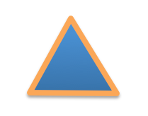
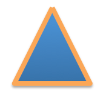

Freeform Shapes¶
PowerPoint AutoShapes, such as rectangles, circles, and triangles, have a preset geometry. The user simply picks from a selection of some 160 pre-defined shapes to place one on the slide, at which point they can be scaled. Many shapes allow their geometry to be adjusted in certain ways using adjustment points (by dragging the small yellow diamonds).
PowerPoint also supports a much less commonly used but highly flexible sort of shape having custom geometry. Whereas a shape with preset geometry has that geometry defined internally to PowerPoint and simply referred to by a keyname (such as ‘rect’), a shape with custom geometry spells out the custom geometry step-by-step in an XML subtree, using a sequence of moveTo, lineTo, and other drawing commands.
Vocabulary¶
A freeform shape is composed of one or more paths. Each path may be configured to get a stroke, a fill, both, or neither. This allows drawing some shapes such as call-outs where, say, a reference line should be stroked but not filled, and the callout balloon contour should be filled but not stroked.
Each path also has its own local coordinate system, which may come in handy when using guides. I haven’t seen any clear examples of this yet but I haven’t gone looking either.
In any case, only a single path will be supported in the initial implementation.
A path is composed of one or more contours. A contour can be a closed contour or and open contour. The closure state only affects the continuity of the contour outline (although it also adds a straight line between start and end if needed).
A contour is specified by a starting point (<a:moveTo>) followed by a sequence of line segments, each of which can be a straight or curved. Curve segments will not be supported in the initial implementation.
The term contour is not “official”, but there are behaviors that depend on “continuous pen-down strokes”, such as “cut-out” behavior. Consequently, a term is needed.
Scope¶
Move to, line to, and close, initially.
Line style (solid, dashed, etc.)
Fill pattern (solid, dashed, etc.)
Limits of scope¶
Curve segments will not be implemented initially.
Curves wouldn’t be that hard to add, but until anyone cares about the control points and we have some live example about how those would be calculated etc., we don’t have a requirement to design to.
Multiple-path freeforms are out of scope for now.
It’s not immediately apparent what they would be good for, and they don’t seem to be required to fulfill present requirements.
Use Case 1 - Specify all points in slide coordinates¶
A very simple case can be had by specifying the verticies in slide coordinates:
>>> freeform_builder = shapes.build_freeform(Inches(1.5), Inches(1))
>>> freeform_builder.add_line_segments((
... (Inches(2), Inches(2)),
... (Inches(1), Inches(2)),
... (Inches(1.5), Inches(1)),
... ))
>>> freeform_shape = freeform_builder.convert_to_shape()
>>> freeform_shape.left.inches, freeform_shape.top.inches
1.0, 1.0
>>> freeform_shape.width.inches, freeform_shape.height.inches
1.0, 1.0
This method may be used to place a freeform shape when you know exactly where you want the vertices to be positioned on the slide. The position and size of the shape (its bounding box) is worked out automatically from the minimum and maximum x and y positions of the points specified.
The shape is automatically closed if the last vertex is the same as the beginning vertex; otherwise the shape is left open.
The library automatically subtracts the top-left corner (origin) coordinates from each point to write the XML.
Use Case 2 - Specify points in custom coordinates¶
The next step up in complexity is where a custom coordinate system is to be used to specify vertices for a single shape.
In this alternative, all the verticies are specified in custom coordinates and a scaling factor is provided:
>>> freeform_builder = shapes.build_freeform(
... 1500, 1000, scale=1000/Inches(1)
... )
>>> freeform_builder.add_line_segments((
... (2000, 2000),
... (1000, 2000),
... (1500, 1000),
... ))
>>> freeform_shape = freeform_builder.convert_to_shape()
>>> freeform_shape.left.inches, freeform_shape.top.inches
1.0, 1.0
>>> freeform_shape.width.inches, freeform_shape.height.inches
1.0, 1.0
This method creates a shape of exactly the same appearance as the prior example. It’s probably not the most natural approach because all coordinates have to be translated to their position on the slide. However, it is an option and it’s more compact. It could also be made to work with floating point values.
This could also work by creating the shape at (0, 0) on the slide and then simply moving the shape to where you wanted using its .top and .left properties.
Use Case 3 - Specify origin for custom coordinates¶
This is perhaps the most natural approach for doing something fancy, like creating individual shapes for each of the 50 US states within a particular area of the slide such that their boundaries all align with adjacent states to make a map of the United States.
Like in the prior use case, verticies are specified in custom coordinates and a scaling factor is provided. In addition, an origin in provided in slide coordinates (EMU). This would correspond to the origin of the entire map of the US in our example and represents where you want the top-left corner of the map to be on the slide.
It is up to the client code to adjust the vertices provided such that they represent their position relative to this origin in the custom coordinates provided. It is also up to the client to get the scaling factor right such that the entire map fits in the intended area of the slide.
In this scenario, top and left arguments are added to the .build_freeform() call. These arguments should be given the same values for each of the “interlocking” shapes. These two arguments each independently take on the value of zero when omitted, which produces the behavior of the prior use case:
>>> freeform_builder = shapes.build_freeform(
... start_x=1500, start_y=1000, scale=1000/Inches(1),
... top=Inches(1), left=Inches(2)
... )
>>> freeform_builder.add_line_segments((
... (2000, 2000),
... (1000, 2000),
... (1500, 1000),
... ))
>>> freeform_shape = freeform_builder.convert_to_shape()
>>> freeform_shape.left.inches, freeform_shape.top.inches
3.0, 2.0
>>> freeform_shape.width.inches, freeform_shape.height.inches
1.0, 1.0
As we can see here, the size of the shape is exactly the same, but it has been translated to be relative to the slide coordinates provided in the .build_freeform() call.
Use Case 4 - Specify position on conversion¶
Another use case is where you want to specify a shape entirely in terms of its local coordinates, relative to its local origin (top-left corner). This might be used when you want a custom shape that is not one of the 168 provided preset geometry shapes, say an orthoganal projection cube or something like that, and then place that in a variety of locations around the slide.
For this you build the shape as in Use Case 2, allowing the origin to default to (0, 0), and then specify a position for the shape in the .convert_to_shape() call. You can even call .convert_to_shape() multiple times to “rubber stamp” the shape in various positions around the slide.
Can you call .convert_to_shape() multiple times? Maybe that would be good!
Usage Notes¶
Closing a contour. A contour is only truly closed if it ends with a <a:close> element. It can appear closed if its end point is the same as its start point, but close inspection of the line-ends will reveal there is no smooth transition around the starting corner. This is more apparent when a wide line style is used for the outline.
A <a:close> element will cause a straight line segment to be drawn between the last point point of the contour and the first. So it’s not necessary to repeat the first point as the last one if a straight line segment suits. The advantage is small however, and might only be an optimization to consider when thousands of freeform shapes were being drawn in a single presentation.
Candidate Protocol¶
Obtain a FreeformBuilder object:
>>> freeform_builder = shapes.build_freeform(50, 0, scale=100/Inches(1))
>>> freeform_builder
<pptx.shapes.freeform.FreeformBuilder objext at 0x...>
The x and y arguments specify the starting pen location in local coordinates. The scale argument determines the rendered size of the shape relative to the values specified for the vertices. The scale argument can be an (x_scale, y_scale) pair to specify a shape coordinate system that is rectangular rather than square.
Add vertices to the freeform shape an arbitrary number of straight line segments can be added to the shape using the add_line_segments() method:
>>> vertices = ((100, 200), (200, 300), (300, 400))
>>> freeform_builder.add_line_segments(vertices, close=True)
The method also specifies whether the contour so generated should be closed (True by default). Closing a contour causes its end point to be connected to its starting point with a straight line segment. It also causes the contour to form a smooth perimeter outline. A contour that is not closed will have line end caps and may be assigned line ends like arrowheads.
Although PowerPoint supports a variety of curved line segments, those will not be implemented in this initial effort.
Add second and further contours A path can have multiple distinct contours. These contours can be separate and distinct or they can overlap. A contour that is completely enclosed by another contour forms a “cutout” in the enclosing contour. Where two contours partially overlap, the fill begins at the outermost boundary and stops when it reaches another boundary.

A new contour is begun by calling the .move_to() method:
>>> freeform_builder.move_to(x, y)
Set freeform coordinate system (extents)
There is no need to explicitly specify the extents of the coordinate system. The position and size of the shape can be calculated from the origin provided and the maxima and minima of the vertices provided.
Specify the scaled size of the freeform shape
This is also unnecessary to specify as it is implied by the scaling factor provided and the maxima and minima of the vertices specified.
Possible approach:
Optionally specify an alternate coordinate system in the initial call such that parameters are:
x, y - X and Y coordinates of initial pen position. If no scaling factor is provided, these are interpreted as Length values from the top-left corner of the slide.
scale=1.0 (optional) - Determines the scaling of the x and y values used to specify the vertices. This is a proportion to a Length unit, which is an Emu, 914400 to the inch. This value is conveniently formed by division with a Length subclass, like 1000/Inches(1) to give “1000 units per inch” in that case. This could just as easily be 2142/Cm(1) to give “2142 units per centimeter”. The default value of 1.0 means “1 unit per Emu”.
left (optional) - X-axis position of top-left corner of freeform shape bounding box, specified as a Length (not scaled) value relative to left edge of slide. If this value is not specified, it is calculated from the minimum x position of the points in the shape.
top (optional) - Y-axis position of top-left corner of freeform shape bounding box, specified as a Length (not scaled) value relative to top edge of the slide. If this value is not specified, it is calculated from the minimum y position of the points in the shape.
y_scale=None (optional, not implemented) - Y-axis scaling factor (defaults to same as X-axis scaling factor)
The shape size (extents) are calculated from max_X and max_Y in given coordinates, multiplied by the scaling factor.
Experimentation¶
How does PowerPoint behave if we leave out all the “guides” and connection points, i.e. if the a:gdLst and a:cxnLst elements are empty?
It likes it just fine. Might not be a bad idea to leave empty a:gdLst and a:cxnLst elements in there though, when creating a new freeform XML subtree, just to be a little safer compatibility-wise since PowerPoint seems to always put them in there.
What happens if there’s no a:moveTo element at the start of a path?
The path does not appear; it is not drawn. Note this is contrary to the (unofficial) documentation indicating that (0, 0) is used as the starting pen location.
What happens if a second path overlaps the first one, i.e. partly in and partly out?
The “outside” portion of the overlapping contour becomes the outside of the shape and the region between that contour and the boundary of the first shape is shaded. This produces two (or more) “point” areas on the perimeter of the first shape where the width is zero.
What happens if the last point is not the same as the first point and the path is closed?
A straight-line segment is added between the last point and the starting point. The appearance is just as it is when the last point is the same as the starting point.
What happens if you do a shape with an a:moveTo in the middle (producing a gap in the outline) but then close the shape? Does it still get a fill or is it considered open then?
The moveTo operation essentially resets the “starting” point for closure purposes. The remainder of the path is closed, but the part before the moveTo remains an open contour.
What happens when the last point is the same as the first point but there is no a:close element?
The shape outline is discontinuous at the start/end point and does not form a smooth contour at that point. The visual appearance depends on the line ends and line end caps chosen.
[ ] What happens when negative coordinate values are used?
[ ] What happens when you close a contour right after an a:moveTo?
- [ ] What is the point of having multiple paths? The only difference I can
see is that overlapping areas are not “subtracted” and you can have a different coordinate system. I’m inclined to think it’s all about needing distinct coordinate systems for some reason, perhaps when variables (guides <a:gd>) are used.
[ ] What is the purpose of the boolean stroke attribute on path?
PowerPoint UI behaviors¶
A freeform shape can be created using the ribbon Shape > Lines and Connectors > Freeform command. There is also a “Curve” and “Scribble” option.
A shape is then created by placing points with the mouse. In the freeform case, each vertex defines a line segment. In the case of a curve freeform, the vertices are control points.
Clicking close to the starting point closes the shape. Double-clicking also ends the drawing, leaving the shape open.
Once created, an “Edit Points” option appears on the context menu when right-clicking the shape. This allows the points to be fine-tuned.
Hypothesis: PowerPoint uses an arbitrary scale of 10,000 (period, not per inch) as the coordinate space for a freeform shape added or edited using the UI. The rules are more complicated, not sure what they are, but it seems to start with a square of about that and move from there.
MS API¶
MS API protocol¶
Example:
Set myDocument = ActivePresentation.Slides(1)
With myDocument.Shapes.BuildFreeform(msoEditingCorner, 360, 200)
.AddNodes msoSegmentCurve, msoEditingCorner, _
380, 230, 400, 250, 450, 300
.AddNodes msoSegmentCurve, msoEditingAuto, 480, 200
.AddNodes msoSegmentLine, msoEditingAuto, 480, 40
.AddNodes msoSegmentLine, msoEditingAuto, 360, 200
.ConvertToShape
End With
Specify pen starting point in initial BuildFreeform call.
All points are specified in slide coordinates.
Specify each vertex separately in an .AddNodes() method call. It seems like it should actually be named .AddNode(), but perhaps they consider control points to be nodes separate from the vertex point.
A line segment can be specified by specifying the x, y vertex of the ending point.
A curve segment can be specified by specifying additional control points (nodes). The vertex can be specified to be a corner (one control point on starting vertex), smooth (tangent at the vertex), or symmetric (we’d have to experiment to see what that does exactly, no ready available documentation).
The path is closed (or not) when the .ConvertToShape() method is called on the FreeformBuilder object. It looks like it’s closed if the last point is coincident with the first and open otherwise.
There is no way to make a multi-path shape as far as I can tell.
The MS API provides no way to “lift the pen” to make a discontinuous path as far as I can tell. (And so does not provide a way to make “cutouts” like a lake within a landmass shape.)
MS API Objects¶
- Shapes.BuildFreeform(x, y)
- FreeformBuilder.AddNodes()
- FreeformBuilder.ConvertToShape()Cannot be called before adding at least one segment to the shape.
- Shape.Nodes
- MsoSegmentType enumeration
Name
Value
Description
msoSegmentCurve
1
Curve.
msoSegmentLine
0
Line.
- MsoEditingType enumeration
Name
Value
Description
msoEditingAuto
0
Editing type is appropriate to the segments being connected.
msoEditingCorner
1
Corner node.
msoEditingSmooth
2
Smooth node.
msoEditingSymmetric
3
Symmetric node.
XML Semantics¶
The w and h attributes of a a:path element specify size of the shape canvas in local coordinates.
The origin of the shape canvas is at its top left corner and has the value (0, 0) in local coordinates. The vertices must be translated by the X and Y minima to place the bounding box tightly around the shape.
The a:rect element specifies the text-box extents for the shape.
The a:pathLst element contains zero or more a:path elements, each of which specify a path.
A path has a private and arbitrary integral coordinate system defined by the w and h attributes on the a:path element. This means that each path in an a:custGeom/a:pathLst has an independent scaling for its coordinate system.
A path is composed of a sequence of the following possible elements:
a:moveTo
a:lnTo
a:arcTo
a:quadBezTo
a:cubicBezTo
a:close
A path may begin with an a:moveTo element. This essentially locates the starting location of the “pen”. Each subsequent drawing command extends the shape by adding a line segment. If the path does not begin with an a:moveTo element, the path does not appear (it is not drawn). Note this is contrary to the (unofficial) documentation indicating that (0, 0) is used as the default starting pen location.
A path can be open or closed. If an a:close element is added, a straight line segment is drawn from the current pen location to the initial location of the drawing sequence and the shape appears with a fill. If the pen is already at the starting location, no additional line segment appears. If no a:close element is added, the shape remains “open” and only the path appears (no fill).
A path can contain more than one drawing sequence, i.e. one sequence can be “closed” and another sequence started. If a subsequent drawing sequence is entirely enclosed within a prior sequence, it appears as a “cutout”, or an interior boundary. This behavior does not occur when the two drawing sequences are in separate paths, even within the same shape.
The pen can be “lifted” using an a:moveTo element, in which case no line segment is drawn between the prior location and the new location. This can be used to produce a discontinuous outline.
A path has a boolean stroke attribute (default True) that specifies whether a line should appear on the path.
The a:pathLst element can contain multiple a:path elements. In this case, each path is essentially a “sub-shape”, such as a shape that depicts the islands of Hawaii.
If a prior path is not closed, its end point path will be connected to the first point of the subsequent path.
The paths within a shape all have the same z-position, i.e. they appear on a single plane such that all outlines appear, even when they intersect. There is no cropping behavior such as occurs for individual shapes on a slide.
Fill behavior¶
Hypothesis: Any shape can have a fill, even an “open” shape. The question of whether a shape has a fill is not determined by whether it is closed, but by whether a fill is applied to the shape.
In the PowerPoint UI, a closed shape is automatically assigned a fill when it is drawn. Conversely, an open shape is not assigned a fill. This behavior is built into the drawing code and is not dependent solely on the “closed-ness” of the shape.
The XML template for a freeform shape (as of this writing) includes an element for a fill and effect, consistent with the PowerPoint defaults for a closed shape. The fill would need to be removed from an open shape if the user didn’t want it.
Coordinate system¶
Each path has its own local coordinate system, distinct both from the shape coordinate system and the coordinate systems of the other paths in the shape.
The x and y extents of a path coordinate system are specified by the w and h attributes on the a:path element, respectively. The top, left corner of the path bounding box is (0, 0) and the bottom, right corner is at (h, w). Coordinates are positive integers in the range 0 to 27,273,042,316,900 (about 2^44.63).
Resources¶
Office Open XML - Custom Geometry http://officeopenxml.com/drwSp-custGeom.php
XML Specimens¶
Hand-built, as-written by PowerPoint¶
This triangle is hand-built using the ‘Freeform’ shape tool in the PowerPoint UI. A couple things to notice:
The shape includes a full complement of <a:gd> and <a:cxn> elements. The shape works fine without these and providing a way to specify these is out of scope for the current effort.
The freeform shape itself is specified in p:sp/p:spPr/a:custGeom. That’s a little interesting that the geometry is considered a shape property (spPr) rather than somehow more core to the shape.
The <a:pathLst> element contains only a single path. I haven’t yet discovered how to add a second path to a shape using the UI.
<p:sp>
<p:nvSpPr>
<p:cNvPr id="2" name="Freeform 1"/>
<p:cNvSpPr/>
<p:nvPr/>
</p:nvSpPr>
<p:spPr>
<a:xfrm>
<a:off x="700718" y="642282"/>
<a:ext cx="897794" cy="773657"/>
</a:xfrm>
<a:custGeom>
<a:avLst/>
<a:gdLst>
<a:gd name="connsiteX0" fmla="*/ 423350 w 897794"/>
<a:gd name="connsiteY0" fmla="*/ 0 h 773657"/>
<a:gd name="connsiteX1" fmla="*/ 897794 w 897794"/>
<a:gd name="connsiteY1" fmla="*/ 773657 h 773657"/>
<a:gd name="connsiteX2" fmla="*/ 0 w 897794"/>
<a:gd name="connsiteY2" fmla="*/ 766359 h 773657"/>
<a:gd name="connsiteX3" fmla="*/ 423350 w 897794"/>
<a:gd name="connsiteY3" fmla="*/ 0 h 773657"/>
</a:gdLst>
<a:ahLst/>
<a:cxnLst>
<a:cxn ang="0">
<a:pos x="connsiteX0" y="connsiteY0"/>
</a:cxn>
<a:cxn ang="0">
<a:pos x="connsiteX1" y="connsiteY1"/>
</a:cxn>
<a:cxn ang="0">
<a:pos x="connsiteX2" y="connsiteY2"/>
</a:cxn>
<a:cxn ang="0">
<a:pos x="connsiteX3" y="connsiteY3"/>
</a:cxn>
</a:cxnLst>
<a:rect l="l" t="t" r="r" b="b"/>
<a:pathLst>
<a:path w="897794" h="773657">
<a:moveTo>
<a:pt x="423350" y="0"/>
</a:moveTo>
<a:lnTo>
<a:pt x="897794" y="773657"/>
</a:lnTo>
<a:lnTo>
<a:pt x="0" y="766359"/>
</a:lnTo>
<a:lnTo>
<a:pt x="423350" y="0"/>
</a:lnTo>
<a:close/>
</a:path>
</a:pathLst>
</a:custGeom>
<a:ln w="57150" cmpd="sng">
<a:solidFill>
<a:schemeClr val="accent6"/>
</a:solidFill>
</a:ln>
</p:spPr>
<p:style>
<a:lnRef idx="1">
<a:schemeClr val="accent1"/>
</a:lnRef>
<a:fillRef idx="3">
<a:schemeClr val="accent1"/>
</a:fillRef>
<a:effectRef idx="2">
<a:schemeClr val="accent1"/>
</a:effectRef>
<a:fontRef idx="minor">
<a:schemeClr val="lt1"/>
</a:fontRef>
</p:style>
<p:txBody>
<a:bodyPr rtlCol="0" anchor="ctr"/>
<a:lstStyle/>
<a:p>
<a:pPr algn="ctr"/>
<a:endParaRPr lang="en-US"/>
</a:p>
</p:txBody>
</p:sp>
The rest of these shape subtrees have the <a:gdLst> and <a:cxnLst> elements removed for brevity and many focus simply on the a:pathLst element for compact presentation.
Effect of <a:close> element¶
This one is a little tricky to see, but if you look closely, you’ll see that the outline at the apex of the triangle is not “closed”. This behavior arises when there is no <a:close/> element at the end of the path, even when the end-point is the same as the start-point:
<a:pathLst>
<a:path w="100" h="100">
<a:moveTo><a:pt x="50" y="0"/></a:moveTo>
<a:lnTo><a:pt x="100" y="100"/></a:lnTo>
<a:lnTo><a:pt x="0" y="100"/></a:lnTo>
<a:lnTo><a:pt x="50" y="0"/></a:lnTo>
</a:path>
</a:pathLst>
XML Schema excerpt¶
<xsd:complexType name="CT_Shape"> <!-- p:sp element -->
<xsd:sequence>
<xsd:element name="nvSpPr" type="CT_ShapeNonVisual"/>
<xsd:element name="spPr" type="a:CT_ShapeProperties"/>
<xsd:element name="style" type="a:CT_ShapeStyle" minOccurs="0"/>
<xsd:element name="txBody" type="a:CT_TextBody" minOccurs="0"/>
<xsd:element name="extLst" type="CT_ExtensionListModify" minOccurs="0"/>
</xsd:sequence>
<xsd:attribute name="useBgFill" type="xsd:boolean" default="false"/>
</xsd:complexType>
<xsd:complexType name="CT_ShapeProperties"> <!-- denormalized -->
<xsd:sequence>
<xsd:element name="xfrm" type="CT_Transform2D" minOccurs="0"/>
<xsd:choice minOccurs="0"> <!-- EG_Geometry -->
<xsd:element name="custGeom" type="CT_CustomGeometry2D"/>
<xsd:element name="prstGeom" type="CT_PresetGeometry2D"/>
</xsd:choice>
<xsd:choice minOccurs="0"> <!-- EG_FillProperties -->
<xsd:element name="noFill" type="CT_NoFillProperties"/>
<xsd:element name="solidFill" type="CT_SolidColorFillProperties"/>
<xsd:element name="gradFill" type="CT_GradientFillProperties"/>
<xsd:element name="blipFill" type="CT_BlipFillProperties"/>
<xsd:element name="pattFill" type="CT_PatternFillProperties"/>
<xsd:element name="grpFill" type="CT_GroupFillProperties"/>
</xsd:choice>
<xsd:element name="ln" type="CT_LineProperties" minOccurs="0"/>
<xsd:choice minOccurs="0"> <!-- EG_EffectProperties -->
<xsd:element name="effectLst" type="CT_EffectList"/>
<xsd:element name="effectDag" type="CT_EffectContainer"/>
</xsd:choice>
<xsd:element name="scene3d" type="CT_Scene3D" minOccurs="0"/>
<xsd:element name="sp3d" type="CT_Shape3D" minOccurs="0"/>
<xsd:element name="extLst" type="CT_OfficeArtExtensionList" minOccurs="0"/>
</xsd:sequence>
<xsd:attribute name="bwMode" type="ST_BlackWhiteMode" use="optional"/>
</xsd:complexType>
<xsd:complexType name="CT_CustomGeometry2D">
<xsd:sequence>
<xsd:element name="avLst" type="CT_GeomGuideList" minOccurs="0"/>
<xsd:element name="gdLst" type="CT_GeomGuideList" minOccurs="0"/>
<xsd:element name="ahLst" type="CT_AdjustHandleList" minOccurs="0"/>
<xsd:element name="cxnLst" type="CT_ConnectionSiteList" minOccurs="0"/>
<xsd:element name="rect" type="CT_GeomRect" minOccurs="0"/>
<xsd:element name="pathLst" type="CT_Path2DList"/>
</xsd:sequence>
</xsd:complexType>
<xsd:complexType name="CT_Path2DList">
<xsd:sequence>
<xsd:element name="path" type="CT_Path2D" minOccurs="0" maxOccurs="unbounded"/>
</xsd:sequence>
</xsd:complexType>
<xsd:complexType name="CT_Path2D">
<xsd:choice minOccurs="0" maxOccurs="unbounded">
<xsd:element name="close" type="CT_Path2DClose"/>
<xsd:element name="moveTo" type="CT_Path2DMoveTo"/>
<xsd:element name="lnTo" type="CT_Path2DLineTo"/>
<xsd:element name="arcTo" type="CT_Path2DArcTo"/>
<xsd:element name="quadBezTo" type="CT_Path2DQuadBezierTo"/>
<xsd:element name="cubicBezTo" type="CT_Path2DCubicBezierTo"/>
</xsd:choice>
<xsd:attribute name="w" type="ST_PositiveCoordinate" default="0"/>
<xsd:attribute name="h" type="ST_PositiveCoordinate" default="0"/>
<xsd:attribute name="fill" type="ST_PathFillMode" default="norm"/>
<xsd:attribute name="stroke" type="xsd:boolean" default="true"/>
<xsd:attribute name="extrusionOk" type="xsd:boolean" default="true"/>
</xsd:complexType>
<xsd:complexType name="CT_Path2DClose"/>
<xsd:complexType name="CT_Path2DLineTo">
<xsd:sequence>
<xsd:element name="pt" type="CT_AdjPoint2D"/>
</xsd:sequence>
</xsd:complexType>
<xsd:complexType name="CT_Path2DMoveTo">
<xsd:sequence>
<xsd:element name="pt" type="CT_AdjPoint2D"/>
</xsd:sequence>
</xsd:complexType>
<xsd:complexType name="CT_AdjPoint2D">
<xsd:attribute name="x" type="ST_AdjCoordinate" use="required"/>
<xsd:attribute name="y" type="ST_AdjCoordinate" use="required"/>
</xsd:complexType>
<xsd:simpleType name="ST_GeomGuideName">
<xsd:restriction base="xsd:token"/>
</xsd:simpleType>
<xsd:simpleType name="ST_GeomGuideFormula">
<xsd:restriction base="xsd:string"/>
</xsd:simpleType>
<xsd:complexType name="CT_GeomGuide">
<xsd:attribute name="name" type="ST_GeomGuideName" use="required"/>
<xsd:attribute name="fmla" type="ST_GeomGuideFormula" use="required"/>
</xsd:complexType>
<xsd:complexType name="CT_GeomGuideList">
<xsd:sequence>
<xsd:element name="gd" type="CT_GeomGuide" minOccurs="0" maxOccurs="unbounded"/>
</xsd:sequence>
</xsd:complexType>
<xsd:simpleType name="ST_AdjCoordinate">
<xsd:union memberTypes="ST_Coordinate ST_GeomGuideName"/>
</xsd:simpleType>
<xsd:simpleType name="ST_AdjCoordinate">
<xsd:union memberTypes="ST_Coordinate ST_GeomGuideName"/>
</xsd:simpleType>
<xsd:simpleType name="ST_PositiveCoordinate">
<xsd:restriction base="xsd:long">
<xsd:minInclusive value="0"/>
<xsd:maxInclusive value="27273042316900"/>
</xsd:restriction>
</xsd:simpleType>
<xsd:simpleType name="ST_Coordinate">
<xsd:union memberTypes="ST_CoordinateUnqualified s:ST_UniversalMeasure"/>
</xsd:simpleType>
<xsd:simpleType name="ST_CoordinateUnqualified">
<xsd:restriction base="xsd:long">
<xsd:minInclusive value="-27273042329600"/>
<xsd:maxInclusive value="27273042316900"/>
</xsd:restriction>
</xsd:simpleType>
<xsd:simpleType name="ST_UniversalMeasure">
<xsd:restriction base="xsd:string">
<xsd:pattern value="-?[0-9]+(\.[0-9]+)?(mm|cm|in|pt|pc|pi)"/>
</xsd:restriction>
</xsd:simpleType>